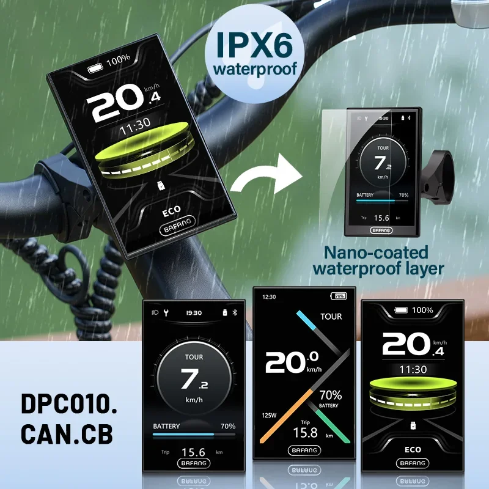
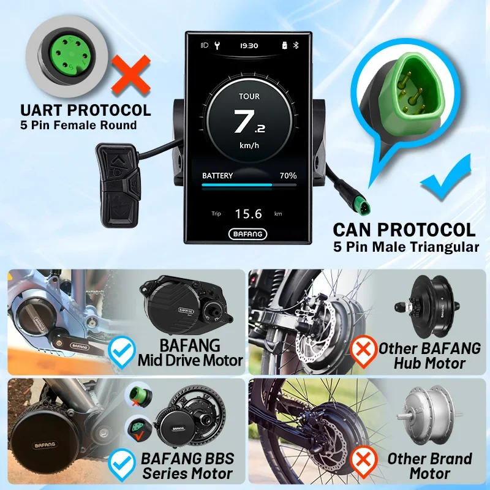
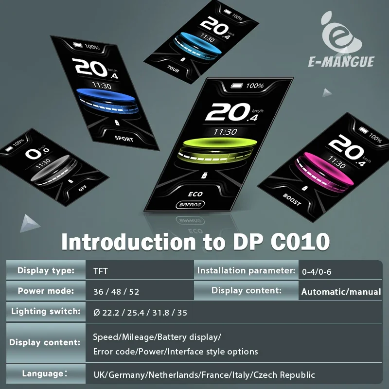
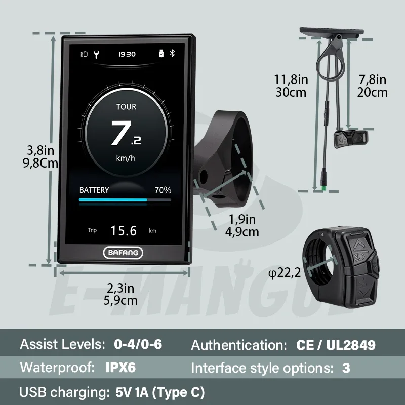
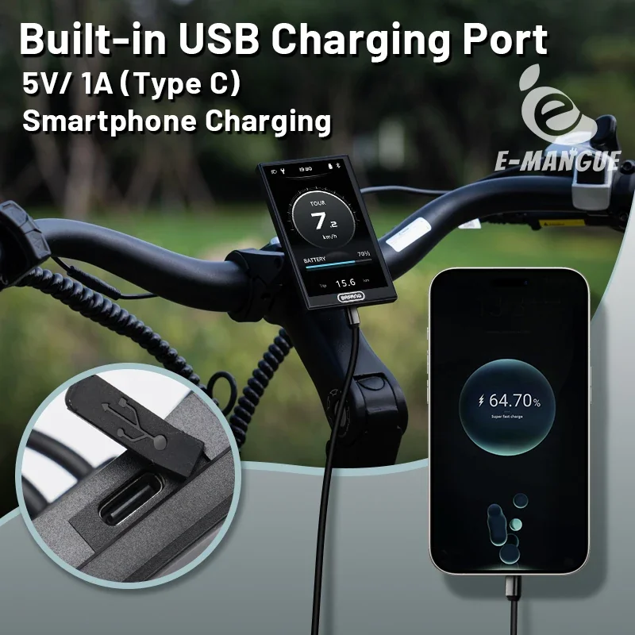
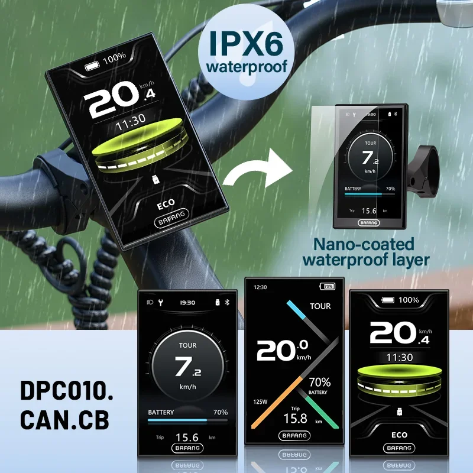
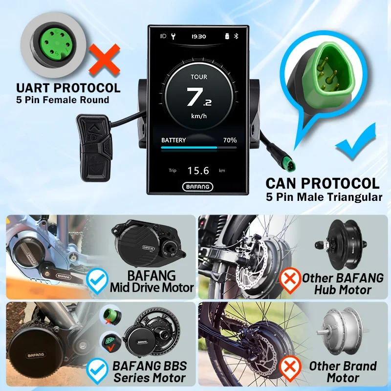
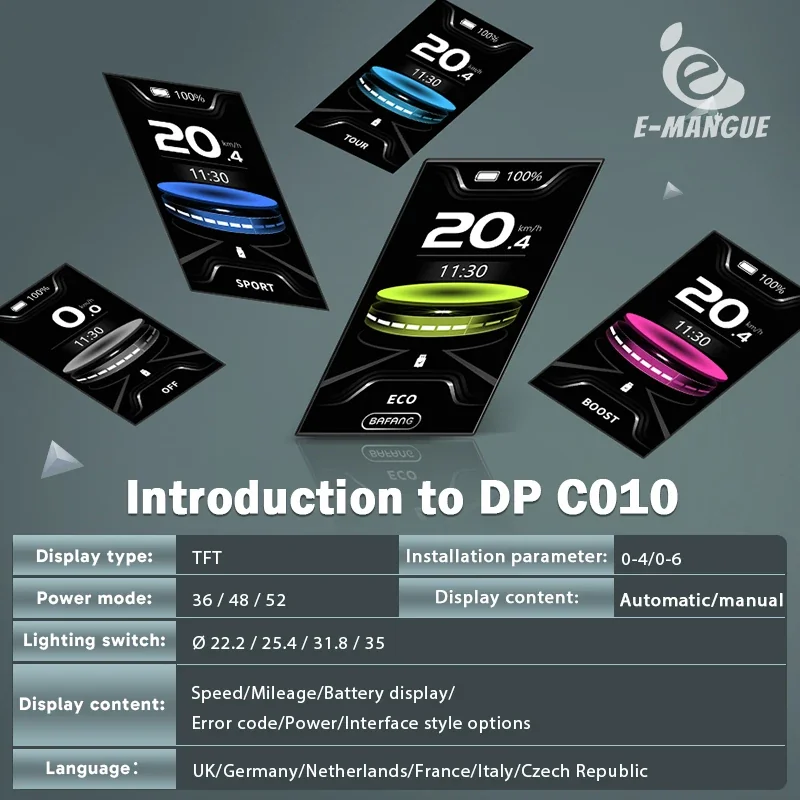
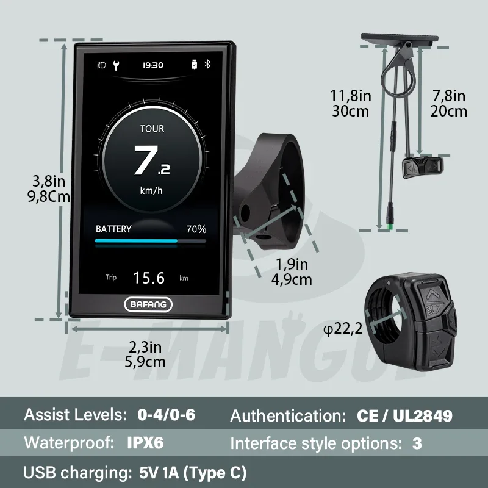
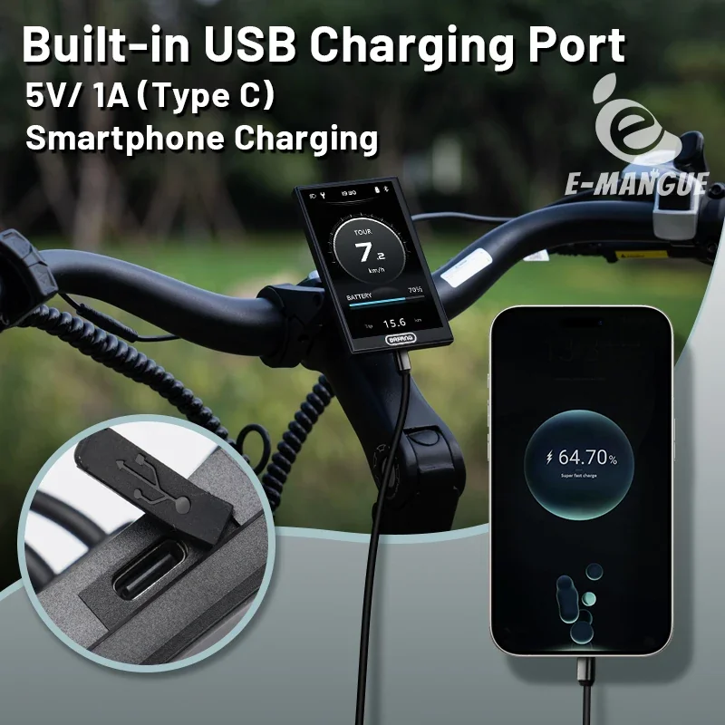

Compteur de vitesse Bluetooth BAFANG DPC010 avec écran 3 pouces, protocole CAN, 6 niveaux, compatible avec les moteurs centraux M620, M600, M560, M510 et M420.
- Connectivité Bluetooth : Associez votre smartphone pour accéder à des fonctionnalités avancées et des options de personnalisation.
- Niveaux d'assistance au pédalage réglables (0 à 6) : Ajustez la puissance délivrée à votre style de conduite et au terrain.
- Écran couleur 4 pouces : Affichage clair et éclatant pour une lisibilité optimale, même en plein soleil.
- Interface intuitive : Navigation simple et design convivial pour une utilisation simplifiée.
Découvrez le futur du vélo électrique avec l'écran Bafang DPC010. Ses fonctionnalités avancées et son design centré sur l'utilisateur vous permettent de rouler plus intelligemment, plus sûrement et avec plus de plaisir que jamais.
L'afficheur Bafang DPC010 est un compteur de vitesse complet conçu pour s'intégrer parfaitement avec certains moteurs centraux Bafang. Cet écran de 4 pouces offre une interface claire et intuitive, fournissant les informations essentielles à portée de main.
- Connectivité Bluetooth : Connectez facilement votre écran à votre smartphone pour un suivi avancé des données et des options de personnalisation.
- Compatibilité avec le protocole CAN : Assure une communication et un échange de données fluides avec les moteurs centraux Bafang compatibles, notamment les modèles M620, M600, M560, M510 et M420.
- Assistance au pédalage multiniveaux : Ajustez votre expérience de conduite grâce à 6 niveaux d'assistance au pédalage, en adaptant la puissance à vos besoins et au terrain.
- Écran LCD clair : Le grand écran de 4 pouces offre une visibilité optimale des données essentielles telles que la vitesse, le niveau de batterie, la distance parcourue, etc.
L'écran Bafang DPC010 offre une gamme de spécifications conçues pour des performances et une expérience utilisateur optimales :
- Taille de l'écran : 4 pouces pouces
- Connectivité : Bluetooth
- Protocole : CAN
- Niveaux d'assistance au pédalage : 0 à 6
Cet écran offre aux cyclistes un contrôle accru, des informations détaillées et des options de personnalisation :
- Informations en temps réel : Restez informé de votre vitesse, du niveau de batterie, de la distance parcourue et d'autres données essentielles pour une conduite sûre et efficace.
- Expérience de conduite personnalisée : Personnalisez vos niveaux d'assistance au pédalage en fonction de vos préférences et des conditions de conduite.
- Intégration smartphone : Accédez à des fonctionnalités avancées et au suivi des données grâce à la connectivité Bluetooth avec les smartphones compatibles.
- Communication moteur fluide : Le protocole CAN assure une communication fluide entre l'écran et les moteurs centraux Bafang compatibles.
L'installation et l'utilisation de l'écran Bafang DPC010 sont simples. Il suffit de le connecter à votre moteur central Bafang compatible en suivant les instructions fournies. L'interface intuitive permet une navigation aisée et un accès rapide aux informations essentielles. Utilisez la connexion Bluetooth pour synchroniser l'application avec votre smartphone et bénéficier de fonctionnalités avancées et d'une analyse des données plus poussée.